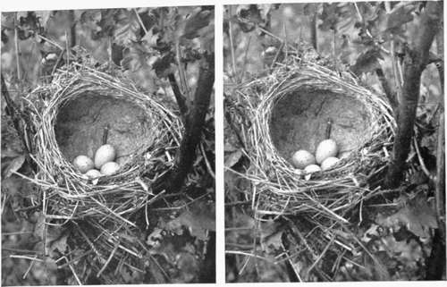
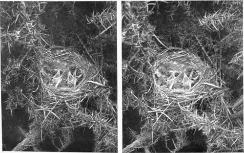

Birds And Their Nests And Eggs. Part 2
Description
This section is from the book "Nature Photography For Beginners", by E. J. Bedford. Also available from Amazon: Nature Photography for Beginners.
Birds And Their Nests And Eggs. Part 2
For the purposes of photography, in commencing at least, the nests situated fairly low down will be the easiest to obtain studies of; therefore one need not look very high but near the ground. A great many birds build either on the ground, in banks and so forth, or at a distance of two or three feet above it in small bushes and rank herbage. A sharp look-out should be kept with the eye while slowly walking along a hedge or bank, and a hooked stick will be found useful to gently tap the thicker bushes or herbage in addition to looking. If a bush be tapped in this way previous to looking in it, any bird on a nest will be almost certain to fly off, but will do so very quietly, as a rule requiring an acute sense of hearing to detect. In this case we might reverse the order of the proverb and say, " A bird in the bush is worth two in the hand," for us. A bird flushed from a nest flies in a very different manner to the usual method of flight, and an experienced eye will soon detect the difference if the bird shows itself, which, however, it will avoid doing if possible. On hearing a bird fly out, a careful search should be made, as the nest is often so skilfully hidden that its discovery is no easy matter. The foliage should be moved aside with care, or we may find the nest has been damaged or the eggs broken before we are aware of it. We should endeavour during the season to obtain photographs of as many different kinds of nests as can be found, and as we shall often discover those of species we have already obtained photographs of, unless there is anything striking about these we should leave them undisturbed, and proceed on our way for new discoveries. When the foliage is thin, it is a good plan to look through it from underneath, when any nest can then be more easily seen against the sky. If the photographer has friends who have had experience in nest-hunting they may often be able to render him a good deal of assistance in discovering subjects for the camera, but he should make up his mind to refrain from robbing the nest of its eggs or young, otherwise, if his friends discover that he is in the habit of doing so, they may refuse to help him any further. This refers particularly to places where he has obtained permission to go for the purpose of obtaining photographs, and he should be careful to see that he does nothing to give cause to the owner of the land he is allowed to roam over to complain or withdraw the permission given, because, if he does, others will have to suffer for his carelessness by perhaps being refused similar privileges.
Fig. 36. Common Partridge's Nest under Seat (22 eggs).
Fig. 37. Dormouse's Nest.
The spring is the great nesting time, and if it is a forward one nests of the early birds, such as the Thrushes, Robin, Hedge Sparrow, and Long-tailed Tit, may be found by the end of March, or exceptionally early ones even in February. The very early nests will generally be built in the shelter of some evergreen in gardens or near houses, where food may be more easily obtained. But if we postpone our first excursion until the beginning of April we shall be almost certain to meet with nests of some or all of the birds just mentioned.
Fig. 5. Long-tailed Tit's Nest.
Fig. 2. Song Thrush's Nest.
Fig. 3. Young Song Thrushes.
Any text-book on birds will give the most likely time for the nest of any species to occur, and, generally speaking, the resident birds nest first, followed by the migrants which arrive on our shores towards the end of April or early in May. A good many species have two broods during the season, and nests may, therefore, be found until July or even later. The months of April, May, and June will, however, be the period when the greatest number will be discovered.
I have already suggested that a series of connected photographs will be most likely to prove of additional interest, and I endeavour to carry this out in my own practice by obtaining, when a suitable opportunity presents itself, two and sometimes three or more different photographs of the same nest. For instance, many birds which nest on the ground cover their eggs over when voluntarily leaving the nest, and it is sometimes possible to show this. In the photographs of the Little Grebe's nest, shown in Figs. 9, 10, and 11, three views were taken. First the site before anything was disturbed at all.
Fig. 9. Little Grebe's Nest (site).
Fig. 10. Little Grebes Nest (eggs covered).
Fig. 11. Little Grebes Nest (eggs uncovered).
Then, after the reeds had been moved aside so that the nest could be seen, another photograph was obtained showing the covering over the eggs, placed there by the bird on leaving the nest. The third picture was taken by carefully moving away the material over the eggs with the point of a stick, so that they could be seen, and, after the photograph was taken, they were carefully re-covered and the surroundings restored to their former condition. Many birds, such as the Partridge, Pheasant, etc., are very particular, and if their eggs have been handled by a human being they can tell and will often forsake them. Keepers and others who have to sometimes touch the eggs rub their hands in fresh earth to take off the scent, and by this means avoid the risk of the birds deserting, which otherwise might occur. A good many instances of two or more views of the same subject under different conditions will be found throughout the illustrations given.
Continue to:
- prev: Chapter VIII. How To Observe And Photograph Some Of Our Commoner Birds And Their Nests And Eggs
- Table of Contents
- next: Birds And Their Nests And Eggs. Part 3
Tags
nature, photography, art, birds, camera